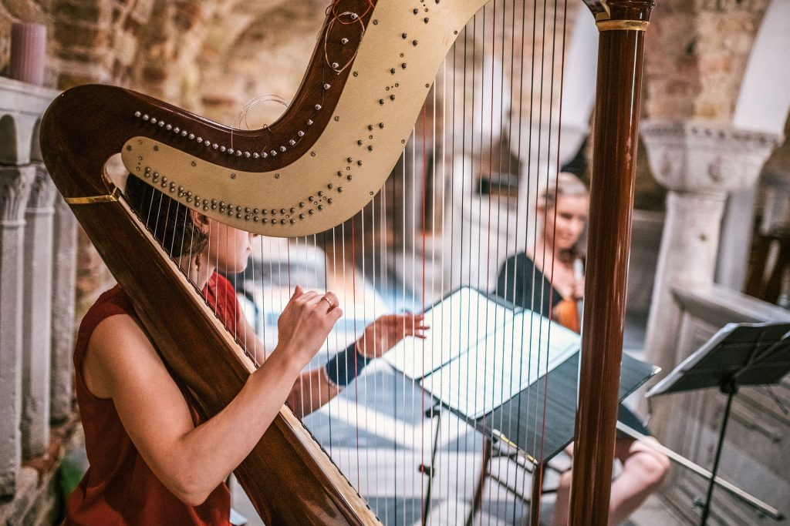
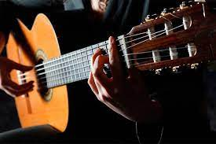
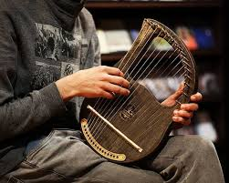
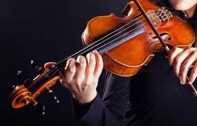
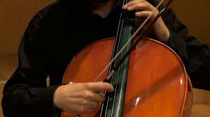

CUERDA
¿Qué caracteriza los instrumentos de Cuerda?
Pertenecen al grupo instrumentos de cuerdas frotadas aquellos cuyo sonido se obtiene a través de un arco (generalmente con el arco hecho de madera, que es la zona de sujeción, y un conjunto de cerdas de crin tensadas debido a que se sujetan a los dos extremos del arco y con las que se frotan las cuerdas), aunque también existe una técnica de «pellizcar» la cuerda, llamada pizzicato. A continuacuón, os mostramos algunos de ellos:
Arpa
El arpa es un instrumento de cuerda pulsada formado por un marco resonante y una serie variable de cuerdas tensadas entre la sección inferior y la superior. Este instrumento tiene sus orígenes en Egipto y Grecia, cuyas civilizaciones fueron las primeras en teorizar la armonización musical, y les permitió desarrollar las técnicas para construir instrumentos cordófonos. El sonido se obtiene al tocar las cuerdas con los dedos. El músico que lo toca se llama arpista.
Piano
Está compuesto por una caja de resonancia a la que se ha agregado un teclado mediante el cual se percuten las cuerdas de acero con martillos forrados de fieltro, produciendo el sonido, Las vibraciones se transmiten a través de los puentes a la tabla armónica, que las amplifica. Está formado por un arpa cromática de cuerdas múltiples, accionada por un mecanismo de percusión indirecta, a la que se le han añadido apagadores. Fue inventado en torno al año 1700 por el paduano Bartolomeo Cristofori. Entre sus antecesores se encuentran instrumentos como la cítara, el monocordio, el dulcémele, el clavicordio y el clavecín (del que deriva la forma, pero no la mecánica).
Guitarra Española
La guitarra, también conocida como guitarra clásica o guitarra española, es un instrumento musical de la familia de los cordófonos, es decir los instrumentos que producen su sonido al hacer vibrar las cuerdas. Es un instrumento musical de cuerda pulsada, compuesto de una caja de resonancia, un mástil sobre el que va adosado el diapasón o trastero —generalmente con un agujero acústico en el centro de la tapa (boca) y seis cuerdas. Sobre el diapasón van incrustados los trastes, que permiten dividir el continuo de sonidos en las 12 notas del sistema tonal, haciendo posible la interpretación de las mismas con mayor facilidad.
Lira
La lira (del griego «λύρα», posteriormente en latín «lyra»), es un instrumento de cuerda punteada antiguo, con forma de ábaco, cuyo origen los griegos atribuyeron a Hermes, dios de la retórica y el comercio (otras versiones menos populares lo atribuyen a la musa Polimnia, una de las nueve musas artísticas, hijas de Zeus). Fue el instrumento musical que talló Orfeo, y el que porta Apolo (dios de la música ), como símbolo de la unificación del estado ciudadano, de la cultura, la música , la religión y las ciencias. Este instrumento era muy importante en la vida cotidiana y popular en todas las poblaciones griegas, siendo muy frecuente hallar en las antiguas vasijas escenas donde se puede ver a los personajes ejecutando la lira y otros instrumentos cordófonos.
Violín
El violín (del italiano violino, diminutivo de viola) es un instrumento de cuerda. Quién lo toca recibe el nombre de violinista. De la familia de las cuerdas frotadas, es el más pequeño y agudo entre los de su clase, que se compone de una caja de resonancia en forma de 8 un mástil sin trastes y cuatro cuerdas que se hacen sonar con un arco. También puede haber violines de metal que son como uno de madera pero el de metal no tiene un fondo.
Violonchelo
El violonchelo o violoncello (abreviado a menudo con el término de chelo) es un instrumento musical de cuerda frotada, perteneciente a la familia del violín. En el seno de esta familia de instrumentos de orquesta, por su tamaño y su registro, el violonchelo ocupa un lugar situado entre las violas, los contrabajos y el octabajo. Es uno de los instrumentos básicos y fundamentales de la orquesta dentro del grupo de las cuerdas, realizando normalmente las partes graves, aunque su versatilidad también permite a los instrumentistas que lo tocan interpretar partes melódicas. El violonchelo también se puede tocar en la salsa. Tradicionalmente está considerado como uno de los instrumentos de cuerda que más se parecen a la voz humana.
